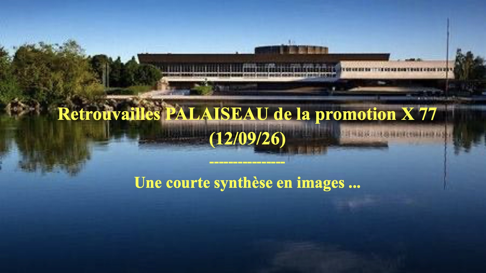

La présentation du SIRTA en vidéo
Retrouvailles à Palaiseau
Visite de l'École polytechnique par la promotion X77, samedi 12 septembre 2026
Le plateau de notre jeunesse, redécouvert

Le 12 septembre 2026, la promotion X77 a retrouvé le plateau de Palaiseau, aux côtés des promotions X86 et X96 qui fêtaient elles aussi leur anniversaire. Au programme : une présentation de l'École par la direction de l'enseignement et de la recherche, avec la Fondation de l'X ; la présentation et la visite du SIRTA, l'observatoire de recherche sur l'atmosphère et le climat que la promotion a soutenu financièrement ; le Drahi X-Novation Center et X-Fab ; un tour du campus et de ses nouvelles écoles ; une balade nostalgique, puis l'apéritif et le dîner.